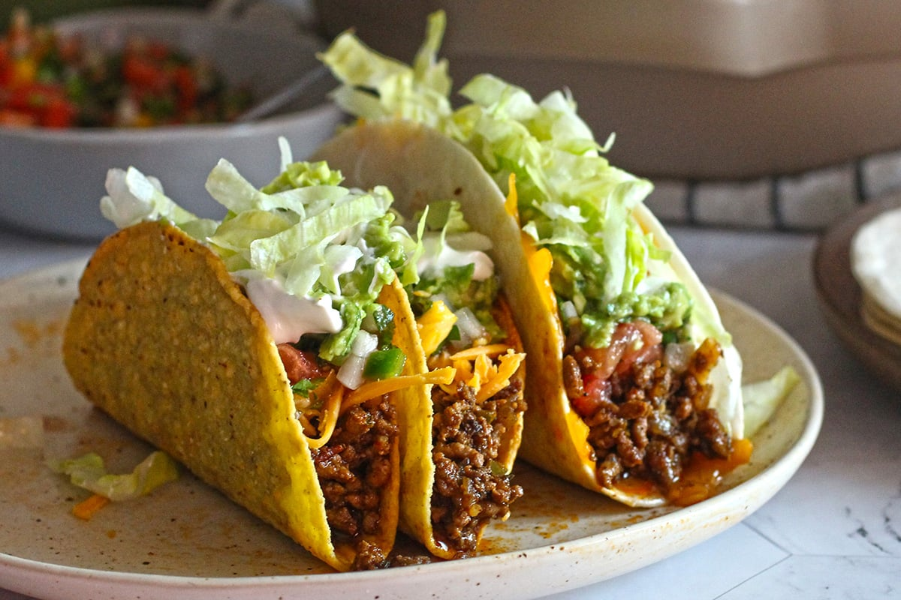

Home
Tacos

Description
Tacos are a delicious Mexican dish made of soft or crunchy tortillas filled with a variety of ingredients like seasoned meat, vegetables, and topped with sauces, cheese, and fresh garnishes. Simple yet versatile, tacos can be enjoyed with anything from ground beef to grilled chicken, and even vegetarian options. It’s a fun and customizable meal for any occasion.
Ingredients
- 1 lb ground beef or chicken
- 1 packet taco seasoning
- 12 small soft tortillas or taco shells
- 1/2 cup shredded lettuce
- 1/2 cup diced tomatoes
- 1/4 cup shredded cheddar cheese
- Salt and pepper to taste
- Sour cream (optional)
Steps
- In a skillet, cook the ground beef or chicken over medium heat until fully cooked. Drain any excess fat.
- Stir in the taco seasoning along with a bit of water (according to package instructions). Simmer for a few minutes until the mixture thickens.
- Warm the tortillas or taco shells in the oven or on a skillet.
- Assemble the tacos by spooning the meat mixture onto each tortilla, then topping with lettuce, tomatoes, and cheese.
- Add salsa and sour cream, if desired. Serve immediately and enjoy!